Cadastro de Fornecedores [
Voltar
]
Este
formulário permite a criação e edição de cadastro de fornecedor.
Para acessá-lo, vá ao menu "Cadastros"
na tela inicial e clique em "Cadastro
de Fornecedores".
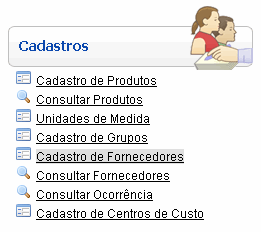
Após clicar no formulário, o sistema abrirá
a seguinte tela:
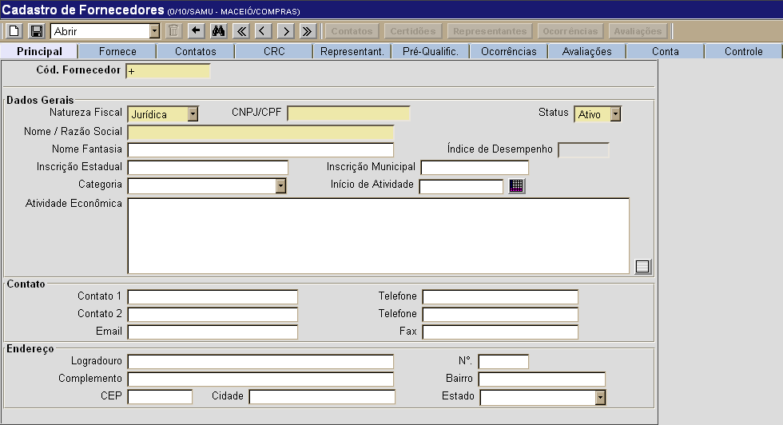
Selecione uma das duas opções abaixo para
ver o guia passo-a-passo:
Cadastrar novo
fornecedor
Editar
fornecedor já cadastrado
Cadastrar novo
fornecedor
1º Passo: informe os principais do novo
fornecedor. Os campos em amarelo são obrigatórios.
2°
Passo: clique
na aba "Fornece" para selecionar os produtos e grupos do
fornecedor.
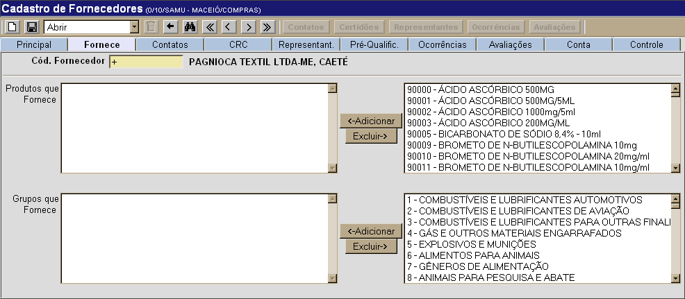
- Produtos que Fornece. Na lista de produtos ao lado do
campo "Produtos que
Fornece", selecione aqueles que
estão associados ao fornecedor em questão. Em seguida, clique no botão .
- Grupo que Fornece. Na lista de produtos ao lado do campo Grupos que Fornece", selecione aqueles que
estão associados ao fornecedor. Em seguida, clique no botão .
Dica: para
selecionar mais de um produto, selecione-os com um clique enquanto
pressiona a tecla "Ctrl". Para seleciona vários produtos em sequência,
selecione o primeiro da lista, mantenha a tecla "Shift" pressionada e
clique no último produto da lista.
3º Passo:
clique no botão  para
salvar os dados inseridos. Assim que o registro é salvo,
um código é gerado automaticamente para o novo fornecedor. para
salvar os dados inseridos. Assim que o registro é salvo,
um código é gerado automaticamente para o novo fornecedor.
4°
Passo: se desejar, clique no botão  para adicionar outros contatos do
fornecedor. Na tela "Contatos do Fornecedor", o usuário
poderá fazer um cadastro detalhado de todos os contatos do fornecedor. para adicionar outros contatos do
fornecedor. Na tela "Contatos do Fornecedor", o usuário
poderá fazer um cadastro detalhado de todos os contatos do fornecedor.
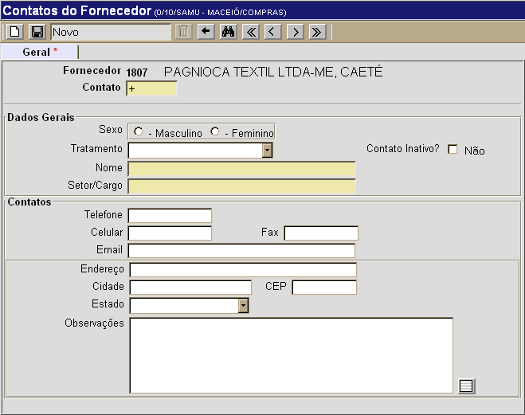
- Informe os dados do representante. Os campos em amarelo são obrigatórios.
- Após inserir todos os dados, clique no botão para salvar o registro.
- Para criar novos contatos, clique no botão
 . .
- Clique no botão
 para retornar à tela principal do cadastro. para retornar à tela principal do cadastro.
5° Passo: se desejar cadastrar
certidões para o fornecedor, clique no botão
 . .
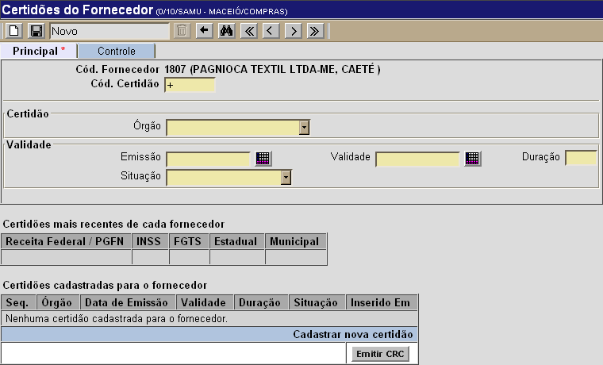
- Informe os dados da certidão e clique no botão para salvá-la.
- Para cadastro de nova certidão, clique no botão .
- Uma vez cadastradas todas as certidões,
clique no botão
 .
A seguinte tela será exibida: .
A seguinte tela será exibida:
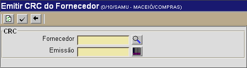
- 5.1.
Informe o Fornecedor e a Data de Emissão da CRC. Se
necessário, utilize os botões
 e e  para selecionar o
fornecedor a partir de uma lista e a data por meio de um calendário. para selecionar o
fornecedor a partir de uma lista e a data por meio de um calendário.
- 5.2.
Em seguida, clique no botão
 . O "Certificado de Registro Cadastral" será
exibido na tela. . O "Certificado de Registro Cadastral" será
exibido na tela.
Observação:
a CRC somente poderá ser emitida quando todas as certidões tiverem sido
criadas.
- 5.3.
Clique no botão para retornar à tela principal do
cadastro de fornecedores.
6°
Passo: se necessário, clique no botão  para cadastrar representantes do
fornecedor. A seguinte tela será exibida: para cadastrar representantes do
fornecedor. A seguinte tela será exibida:
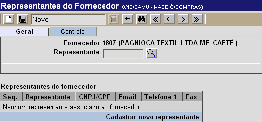
- Informe o código do representante, ou
clique no botão
para selecioná-lo a partir de uma lista.
- Em seguida, pressione a tecla .
- Clique no botão para
retornar à tela principal do cadastro de fornecedores.
7°
Passo: se
necessário, clique no botão  para
registrar ocorrências para o fornecedor. A seguinte tela
será exibida: para
registrar ocorrências para o fornecedor. A seguinte tela
será exibida:
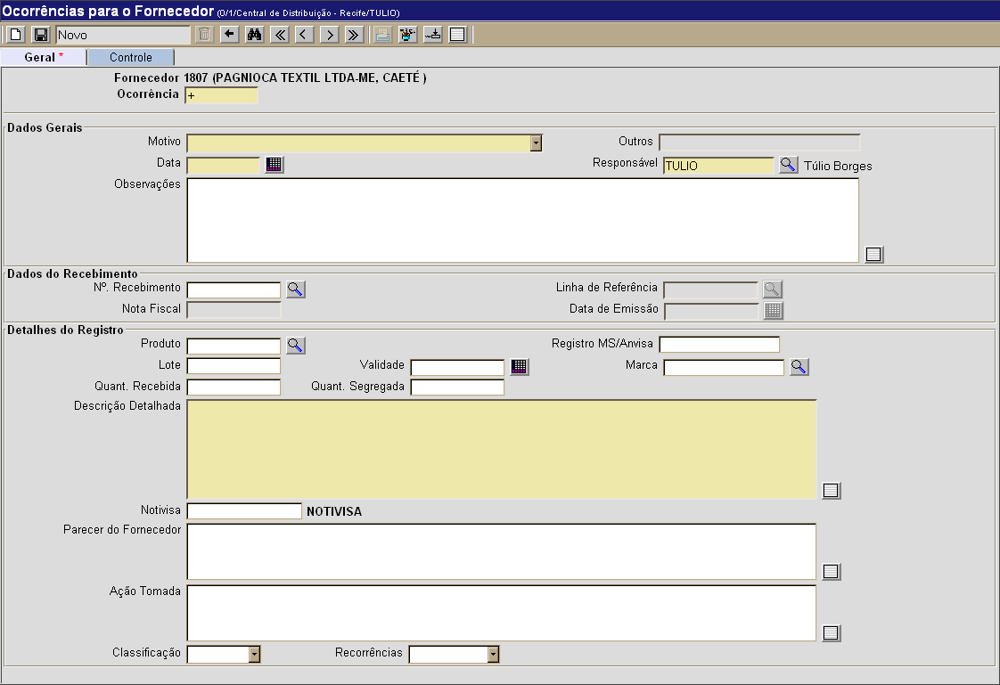
Na parte inferior da tela são exibidas as ocorrências já registradas para o fornecedor.
- Preencha
os detalhes desta ocorrência. Todos os campos são
obrigatórios.
- Ocorrência. Este campo apresenta por padrão um sinal de "+". Desta forma, assim que
o registro é salvo, é-lhe atribuído o próximo número de ocorrência
disponível para este fornecedor;
- Motivo. Selecione um motivo para esta ocorrência. Para motivos não descritos entre as opções selecione Outros:
- Dados do faturamento (CNPJ, endereço, data de emissão da NF);
- Produto(s)
divergente(s) da ordem de compra;
- Quantidade(s) divergente(s) - nota fiscal x ordem compra;
- Condições inadequadas de pagamento;
- Divergência
de valores na nota fiscal;
- Condições inadequadas de embalagem;
- Quantidade(s) divergente(s) - nota fiscal x físico;
- Divergência(s) de lote e/ou validade - nota fiscal x físico;
- Prazo de validade inadequado;
- Lote entregue inadequado;
- Marca/Apresentação inadequada do produto;
- Desvio de temperatura dos produtos entregues;
- Atraso na entrega;
- Desvio de qualidade;
- Outros.
- Outros.
Se a opção Outros tiver sido selecionada no campo "Motivo", informe neste campo o motivo em questão;
- Data.
Especifique aqui a data em que esta ocorrência foi constatada. Se desejar, clique no botão
 para selecionar a data a partir de um calendário. Dicas para preenchimento de
campos de data: para selecionar a data a partir de um calendário. Dicas para preenchimento de
campos de data:
- Data
atual: digite o sinal . (ponto) e
pressione a tecla "Enter" para que o sistema retorne a data atual;
- Data
do mês corrente: digite o dia do mês e
pressione a tecla "Enter" para que o sistema retorne o mês e ano
correntes;
- Dias
a contar da data atual: digite o sinal + (mais) ou - (menos)
antes do número de dias em em referência à data atual e pressione a
tecla "Enter" para a data anterior ou posterior à data atual.
- Responsável. Este campo é preenchido com o nome do usuário que está logado no Sistema. Se desejar, clique no botão
 [Procurar] para selecionar outro usuário cadastrado;
[Procurar] para selecionar outro usuário cadastrado; - Observações. Deposite aqui informações adicionais sobre a ocorrência;
- N°. Recebimento. Ao
abrir a tela de ocorrências a partir de um recebimento, este campo
será populado com o número do recebimento em questão;
- Linha de Referência. No caso de ocorrência para um recebimento específico, clique no botão
[Procurar] para selecionar a linha do produto que motivou esta ocorrência;
- Nota Fiscal. Ao selecionar um recebimento, o Sistema carregará aqui a nota fiscal do recebimento em questão;
- Data de Emissão. Ao selecionar um recebimento, o Sistema carregará aqui a data de emissão da nota fiscal do recebimento em questão;
- Produto. Ao selecionar uma linha de referência de recebimento, o Sistema carregará aqui a descrição do produto em questão;
- Registro MS/Anvisa. Você pode inserir aqui o registro para o produto no Ministério de Saúde e Anvisa;
- Lote. Ao selecionar uma linha de referência de recebimento, o Sistema carregará aqui o lote do produto em questão;
- Validade. Ao selecionar uma linha de referência de recebimento, o Sistema carregará aqui a validade do produto em questão;
- Marca. Ao selecionar uma linha de referência de recebimento, o Sistema carregará aqui a marca do produto em questão;
- Quant. Recebida. Ao selecionar uma linha de referência de recebimento, o Sistema carregará aqui a quantidade recebida do produto em questão;
- Quant. Segregada. Informe aqui a quantidade segregada deste produto;
- Descrição Detalhada. Insira aqui uma descrição detalhada da ocorrência;
- Notivisa. Especifique
Informe aqui o número da notificação da ocorrência junto à ANVISA,
através do Sistema Nacional de Notificações para a Vigilância Sanitária
- NOTIVISA. Para acessar o site do Sistema de Notificações para a
Vigilância Sanitária, clique no link ao lado do campo (ver imagem
abaixo):
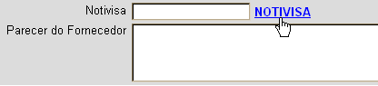
- Parecer do Fornecedor. Você pode depositar aqui o parecer do fornecedor sobre a ocorrência;
- Ação Tomada. Você pode depositar aqui as ações tomadas referentes a esta ocorrência;
- Classificação. Você pode selecionar aqui a classificação de gravidade da ocorrência: Grave ou Não grave;
- Recorrências. Informe aqui se há recorrências associadas.
- Clique no
botão
 para salvar a
ocorrência. Para cadastrar outra ocorrência, clique no
botão para salvar a
ocorrência. Para cadastrar outra ocorrência, clique no
botão  [Novo]
e repita os passos acima. [Novo]
e repita os passos acima.
Observação: caso a ocorrência em questão seja um desvio de qualidade, você pode imprimir o relatório Comunicado de Desvio de Qualidade por meio do botão  .
Para retornar à tela principal do recebimento, clique no botão  . .
8°
Passo: para avaliações do fornecedor, clique no botão  . .
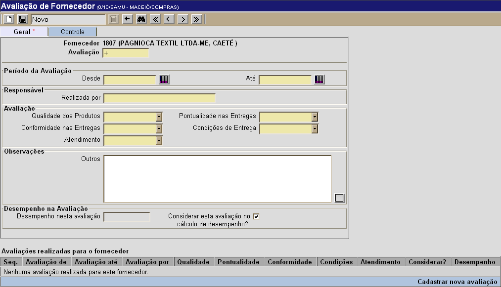
- Insira no formulário todos os dados da
avaliação. Os campos em amarelo são obrigatórios. Utilize o
botão para
selecionar com um clique a data do calendário.
- Clique no botão para se desejar fazer novas
avaliações para este fornecedor.
- Clique no botão para
retornar à tela principal do cadastro.
9° Passo: clique na aba "Conta" para anotar os detalhes bancários do
fornecedor.
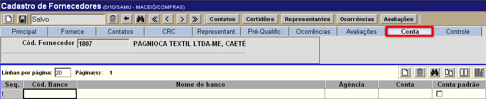
- Especifique o código e nome do banco, assim
como a agência e a conta. Se for o caso, marque a opção "Conta Padrão".
- Para adicionar outras contas, clique no
botão localizado acima da grade (ver
imagem abaixo).
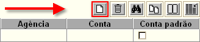
- Após cadastrar todas as contas existentes,
clique no botão para finalizar o
cadastro.
Editar
fornecedor já cadastrado
Para editar os detalhes de um fornecedor
já cadastrado, siga os passos abaixo.
1º Passo: para localizar o fornecedor que deseja
abrir, clique no botão  da
barra de
botões. da
barra de
botões.
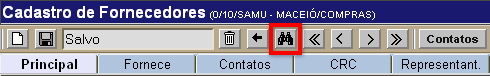
Em
seguida, utilize os favoritos de pesquisa (ver imagem abaixo) para
localizar o fornecedor desejado: Padrão, Pessoa Física ou Pessoa Jurídica. Para mais informações sobre
outros recursos
e
funcionalidades da pesquisa, favor ver o manual Introdução
ao Sistema.
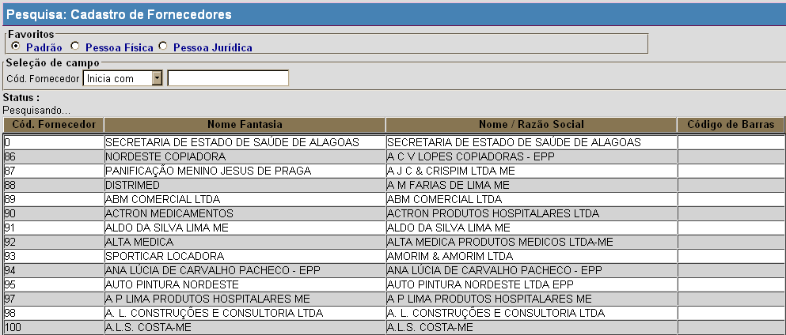
Assim que localizar o fornecedor em questão, selecione-o com um clique. Quando o fornecedor é selecionado, o seu
cadastro é aberto e são exibidas as informações atuais.
2° Passo: edite as
informações do fornecedor.
3°
Passo: quando todas
as informações estiverem corretas, clique no botão para
salvar o cadastro. O usuário poderá acessar outras telas para
cadastros adicionais por meio dos seguintes botões:
Observação:
a CRC somente poderá ser emitida quando todas as certidões tiverem sido
criadas.
- Clique no botão para retornar à tela principal do
cadastro de fornecedores.
- Como cadastrar representantes do
fornecedor. Ao clicar no botão a seguinte tela será exibida:
- Informe o código do representante, ou
clique no botão
para selecioná-lo a partir de uma lista.
- Em seguida, pressione a tecla .
- Clique no botão para
retornar à tela principal do cadastro de fornecedores.
- Como registrar ocorrências para o fornecedor. Ao clicar no botão a seguinte tela será exibida:
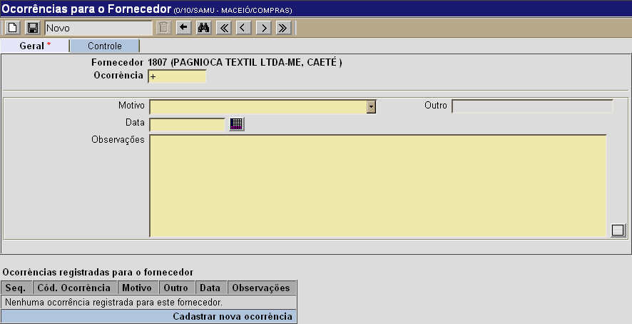
- Após especificar o Motivo, Data e
Observações acerca da ocorrência, clique no botão para
salvá-la.
- Clique no botão para registrar novas ocorrências.
- Clique no botão para
retornar à tela principal do cadastro de fornecedores.
- Como realizar avaliações do fornecedor. Ao clicar no botão a seguinte tela será exibida:
- Insira no formulário todos os dados da
avaliação. Os campos em amarelo são obrigatórios. Utilize o
botão para
selecionar com um clique a data do calendário.
- Clique no botão para se desejar fazer novas
avaliações para este fornecedor.
- Clique no botão para
retornar à tela principal do cadastro.
4° Passo: clique na aba "Conta" para anotar os detalhes bancários do
fornecedor.
- Especifique o código e nome do banco, assim
como a agência e a conta. Se for o caso, marque a opção "Conta Padrão".
- Para adicionar outras contas, clique no
botão localizado acima da grade (ver
imagem abaixo).
- Após cadastrar todas as contas existentes,
clique no botão para finalizar o
cadastro.
Ir
para o topo da
página
|